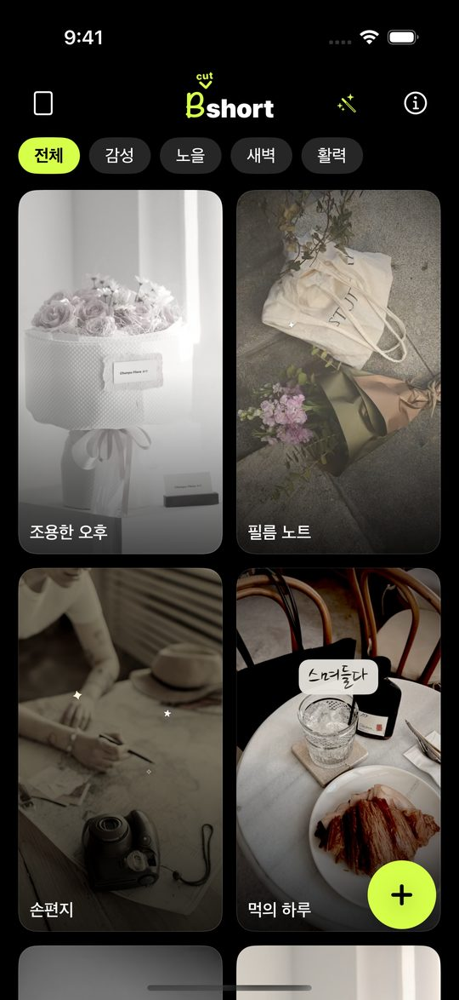
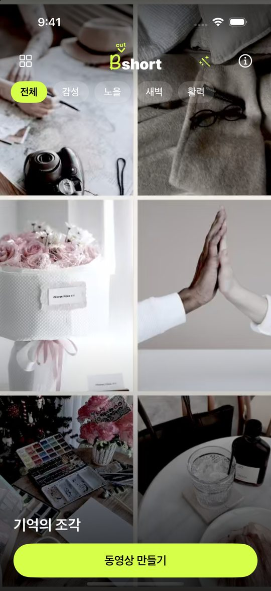
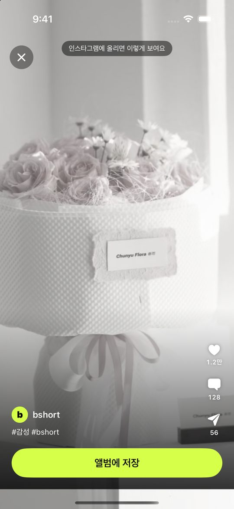
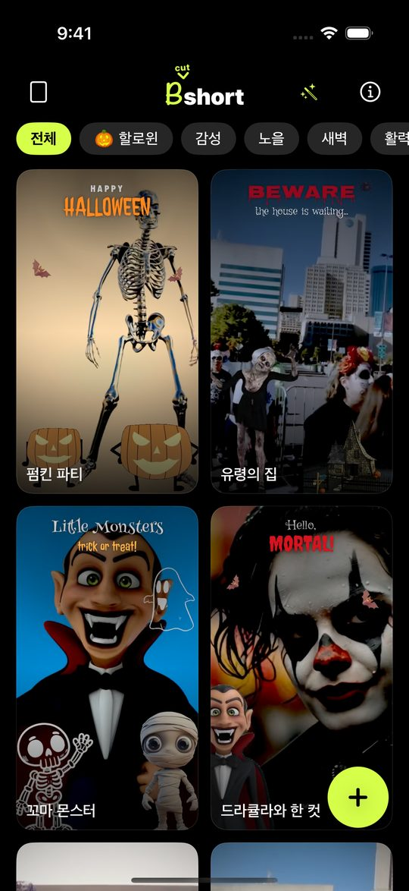
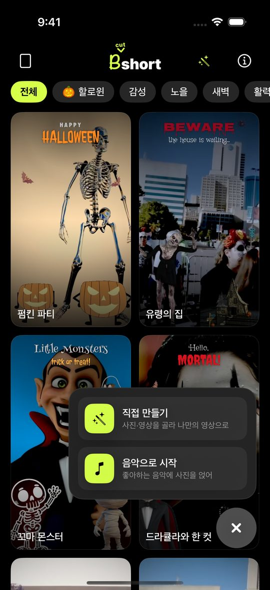
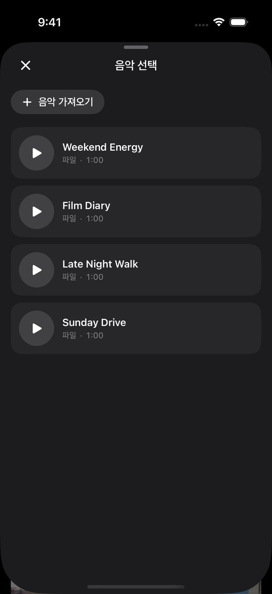
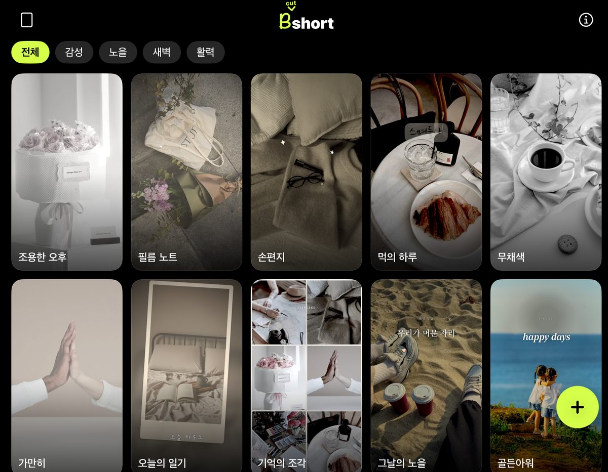

사진만 고르면 숏츠.
분위기를 고르고 사진 몇 장을 넣으면 색보정·자막·음악까지 얹힌 세로 영상이 나옵니다. 타임라인도, 키프레임도, 계정도 없습니다.
- 템플릿 32개 + 시즌 템플릿
- 가입 없음
- 폰 안에서 완성
- 한국어·영어·일본어·스페인어
세 번이면 끝
고르고, 넣고, 저장.

템플릿 고르기
미리보기가 그대로 재생됩니다. 분위기 칩으로 걸러 보고 마음에 드는 걸 누르세요.

사진 넣기
‘동영상 만들기’를 누르고 사진이나 영상을 몇 개 고르면 바로 만들어집니다.

저장하기
인스타그램에 올렸을 때 모습 그대로 미리 보고, 앨범에 저장하면 끝입니다.
룩
같은 사진도, 템플릿마다 다른 영상.
감성·노을·새벽·활력 네 분위기. 템플릿마다 색보정과 글씨체, 배경음악을 따로 만들어 같은 룩이 하나도 없습니다.


더 재미있게
찍은 사진이 영상 속 장면이 됩니다.
캐릭터가 바라보는 쪽에 섭니다
사진 속 사람이 고개를 돌린 쪽을 앱이 알아채고 캐릭터를 그쪽으로 옮겨, 함께 찍은 것처럼 보이게 합니다. 얼굴 방향은 폰 안에서만 읽습니다.

시즌마다 새 템플릿
할로윈 같은 시즌에는 기간 한정 템플릿이 앱 업데이트 없이 찾아옵니다. 움직이는 캐릭터와 새 화면 전환이 함께 옵니다.
캐릭터와 같이 한 컷
드라큘라, 해골, 호박이 사진 속 사람 옆에 서서 손을 흔들고 춤을 춥니다. 사람은 가운데, 캐릭터는 옆에.


내 사진, 내 문구, 내 음악
직접 만들기에서 순서와 길이, 문구 위치를 정하고, 파일이나 영상에서 가져온 음악을 깔 수 있습니다.

큰 화면에서는 더 많이
폴더블을 펼치면 템플릿이 한 줄에 더 많이 보이고, 영상은 잘리지 않고 통째로 재생됩니다.
개인정보
사진은 기기 밖으로 나가지 않습니다.
보낼 서버가 아예 없습니다. 선택도 합성도 저장도 전부 기기 안에서 이뤄지고, 로그인할 계정도 없습니다. 무료 앱이라 광고가 붙고, 그래서 Google AdMob이 광고 식별자와 기기 정보를 수집합니다. 자세한 내용은 개인정보처리방침에 전부 적어 두었습니다.
하나 만들어 보세요.
App Store에서 무료입니다. 분위기 하나, 사진 몇 장이면 결과가 나옵니다.